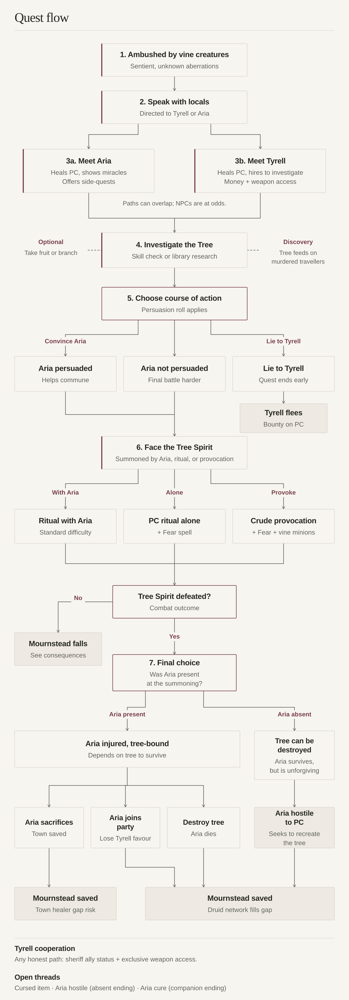
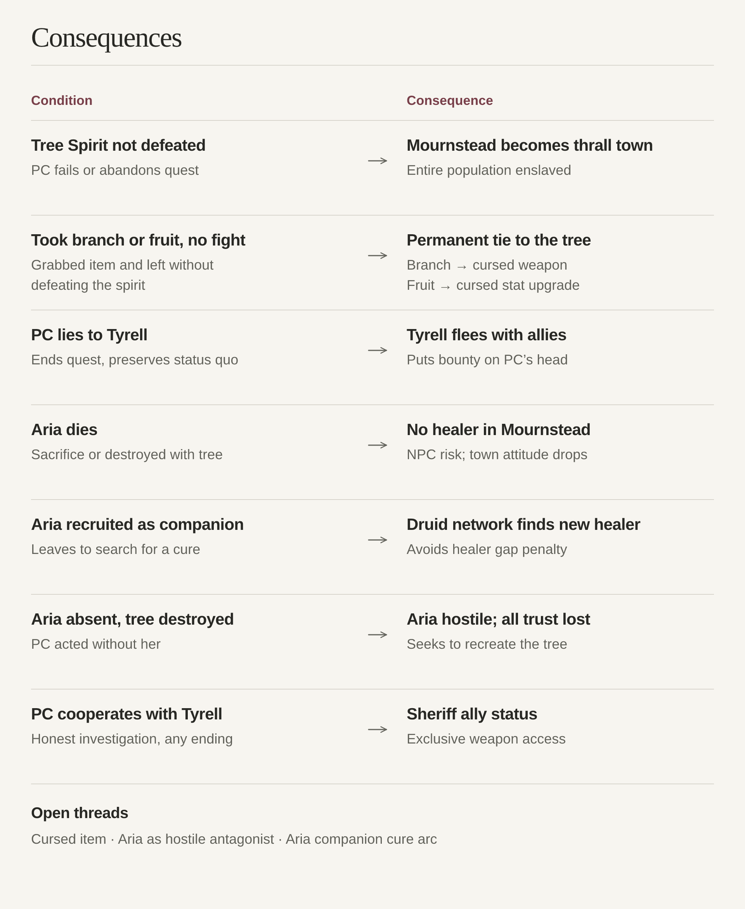

Sapsorrow
A branching quest about the village of Mournstead, its miraculous tree, and the people who depend on it.
Objective
Investigate the aberrations that plague the village of Mournstead.
Key Characters & Locations
Mournstead
Location
A small village with a big problem; an isolated frontier settlement facing dying crops and mysterious attacks on nearby roads. Despite the hardships, the inhabitants seem cheerful and accommodating.
The Tree of Life
Key Object
A gnarled ancient tree sitting on a hill nearby Mournstead that has been the object of worship for decades. Each autumn equinox it produces red healing apples, rumored to restore missing limbs.
Aria
Potential Companion
Local midwife and druidess: a blend of naive indigo child and harried social worker, too curious for her own good. Blinded by her connection to local nature, she is unwilling to directly address concerns regarding The Tree.
Tyrell
Sheriff
Young, stern, suspicious of superstition in a way that doesn't make him any friends. Wants to make Mournstead a better place, but hasn't yet earned his stripes, partially due to his thorny demeanor.
Quest Steps
-
Defend yourself! The PC is ambushed by sentient vine-like creatures, unlike anything they've ever encountered before.
-
Speak with the locals about the aberrations. The locals will direct the PC to Tyrell or Aria depending on their personal views. They are sympathetic but reluctant to divulge more information. It seems they are aware of the problem.
-
Speak with Tyrell or Aria. Both offer the PC means to heal their injuries. Tyrell will hire the PC to investigate the tree and promise a monetary incentive as well as potential access to his weapon stash, while Aria will show them her clinic and the miracles the Tree has performed in Mournstead. She will also offer side-quests that deepen the PC's involvement with the population. A PC following Tyrell's quest can still help Aria out, even if the NPCs are at odds.
-
Investigate the Tree. The PC can examine the Tree using their skills (Nature, Investigation, History, or Religion), or scour the local library for information. If they succeed on either, they will learn that the Tree most likely draws its powers from the travelers murdered by its minions with additional lore provided depending on the roll, information source, and abilities. When interacting with the Tree, the PC also has the option to simply grab a fruit of life or a branch for themselves, either for monetary gain or crafting.
-
Pick a course of action. Depending on the breadth of knowledge they uncover and a Persuasion roll, the PC might persuade Aria that the Tree does more harm than good and get her help in communing with its spirit to end the trouble or lie to Tyrell about the results of their investigation, ending it prematurely and preserving the status quo. If they do not succeed in convincing Aria to help, the final battle against the Tree will be more challenging.
-
Face the Tree Spirit. The spirit will attack if summoned by the PC or Aria, either via a ritual learned at the library or from Aria, or by crudely provoking it. Provocation makes the battle tougher, as the Tree Spirit will use its vine-like minions. If the PC summons or provokes the Spirit themselves, they must also engage in a mental battle, fighting a Fear spell before they can attack the Tree.
-
Make your final choice. If Aria is present at the summoning, she gets injured and becomes dependent on the Tree for survival. She can be convinced to sacrifice herself for the good of the town, or invited to join the party to search for another solution, at the cost of Tyrell's favor. Alternatively, the PC can destroy the Tree, killing Aria, but gaining a friendly town on its way to prosperity: lower trade prices and mercenaries for hire. If Aria is absent during the battle, the Tree can be destroyed, but she will never forgive the PC for desecrating a holy site and will seek to recreate it.
Consequences
-
If the PC doesn't defeat the Tree Spirit, Mournstead will soon fall prey to the Tree, becoming a town full of mindless thralls.
-
If the PC takes a branch or fruit and doesn't confront the Spirit, they gain a permanent tie to the Tree: a cursed weapon (from the branch) or a cursed stat upgrade (from the fruit). This may lead to future quests.
-
If the PC lies to Tyrell to preserve the status quo, Tyrell learns the truth early enough to flee with a few close allies and puts a bounty on the PC's head.
-
If Aria dies, Mournstead goes without a healer, putting other NPCs at risk and affecting the inhabitants' attitude toward the PC.
-
If Aria is recruited, the PC has a chance to use her druid connections to find another healer for Mournstead, avoiding the above.
-
If Aria is absent for the final battle, she will lose any trust she had in the PC and seek to create another Tree of Life.
-
If the PC cooperates with Tyrell, they are granted additional privileges as an ally of the local sheriff, including access to weapon options that are otherwise inaccessible.
Quest flow


Consequence map

